Human Impact on Climate:
The Evidence
EES 2110
Introduction to Climate Change
Jonathan Gilligan
Class #21: Monday, February 27 2023
The Paleocene-Eocene Thermal Maximum
The Paleocene-Eocene Thermal Maximum
\[ \calcite \rightleftharpoons \Caplus + \carb \]
- Alkaline Ocean:
- High \(\carb\): Reaction runs \(\Leftarrow\)
- Carbonates survive on sea floor
- Acid Ocean:
- Low \(\carb\): Reaction runs \(\Rightarrow\)
- Carbonates dissolve
- Only clay is left
- Red clay layer \(\Rightarrow\)
ocean acidification
- Large burst of \(\COO\) into atmosphere.
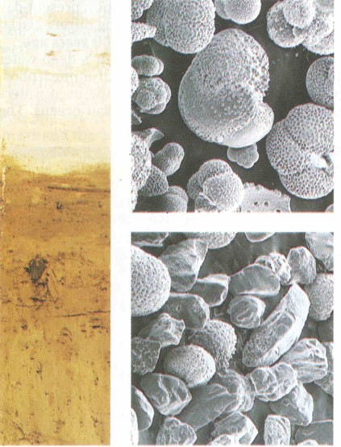
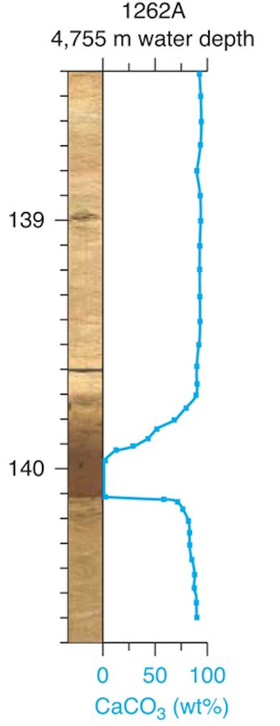
Paleocene-Eocene Thermal Maximum
- 55 million years ago
- 1500–4500 GT carbon added to atmosphere in 1000 years
- Compare:
- 600 GT in atmosphere in 1700s,
- 884 GT today
- Known fossil fuels: ~5000 GT
- Compare:
- Temperature rose 5–9°C (9–16°F)
- Ocean at North Pole was about 23° C (73° F).
- Breadfruit & other tropical trees grew in Canada
- Lasted ~120,000 years
- Transition to cooler temperatures took ~40,000 years
- Eocene \(\rightarrow \cdots
\rightarrow\) Pliocene \(\rightarrow\) Pleistocene
- Gradual cooling for 50 million years
- Ice age glaciation of North America, Europe begins ~2.8 MYA
Abrupt Climate Change
Abrupt Climate Change
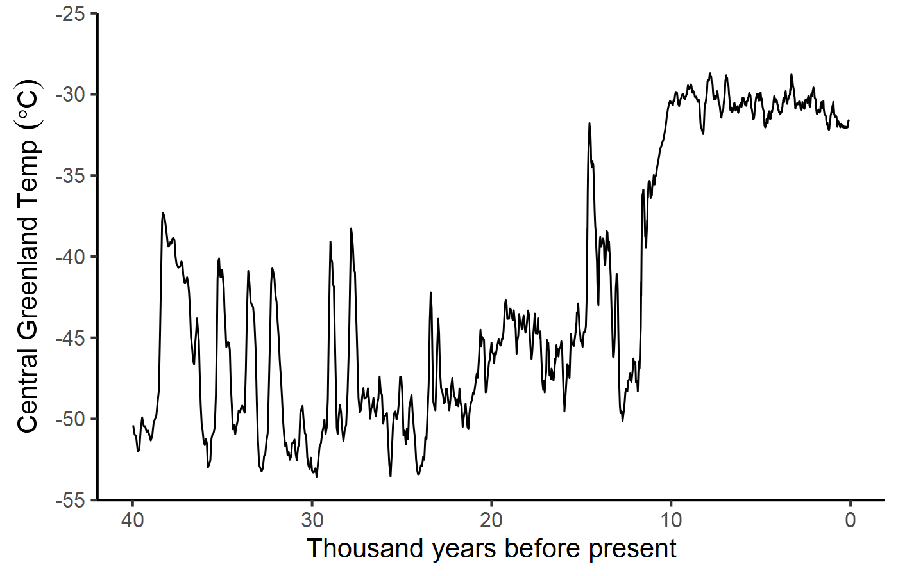
Abrupt Climate Change
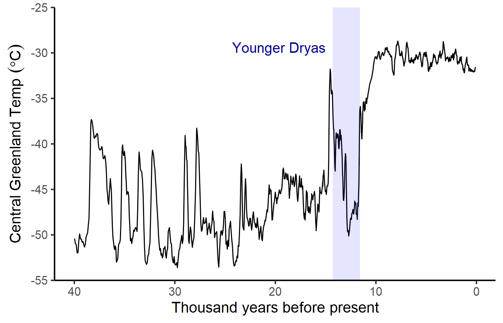
Younger Dryas
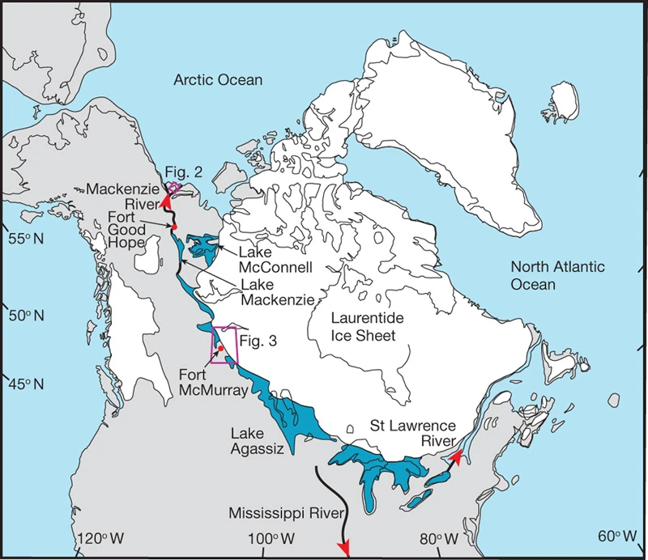
J.B. Murton et al., Nature 464, 740 (2010). doi: 10.1038/nature08954
- About 14,000 years ago there was rapid warming
- Giant Glacial Lake Agassiz
- When enough ice melted, Lake Agassiz drained into Arctic and Atlantic Oceans
- Fresh water diluted salt water
- Less dense, wouldn’t sink
- Stopped deep-water formation
- Blocked conveyor belt current
- Warm currents (Gulf stream, Mediterranean current) bring lots of
heat to North Atlantic, Western Europe.
- Without that heat, cold temperatures returned
Cold Pool in North Atlantic
Warming Trend: 1900–2013
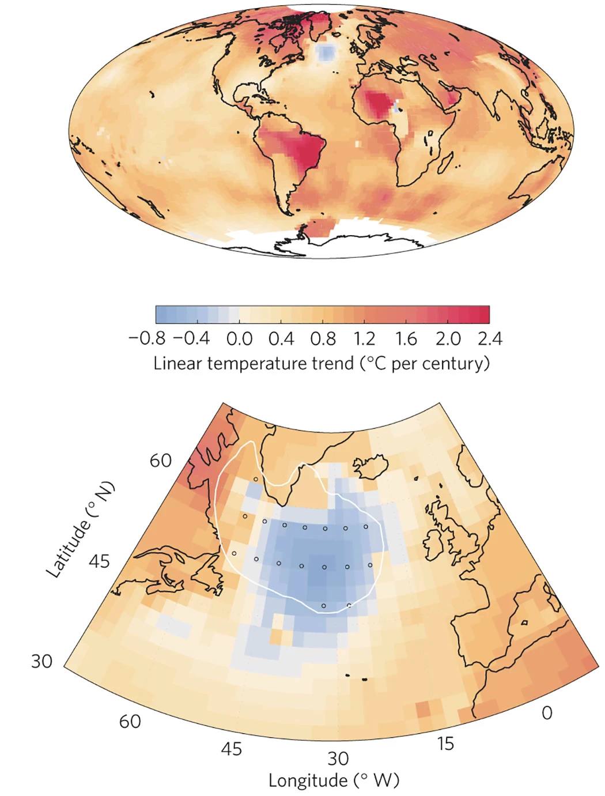
S. Rahmstorf et al., Nature Climate Change 5, 475 (2015). doi: 10.1038/nclimate2554
- Atlantic circulation (Gulf stream, etc.) has slowed down.
- Rapid decline since mid-20th century
- Circulation is the weakest in the last 1000 years.
- Without that heat, a pool of water in the North Atlantic is cooling.
- Fresh water from melting ice on Greenland may be partially responsible.
Climate in the
Last
Millennium
Walker River
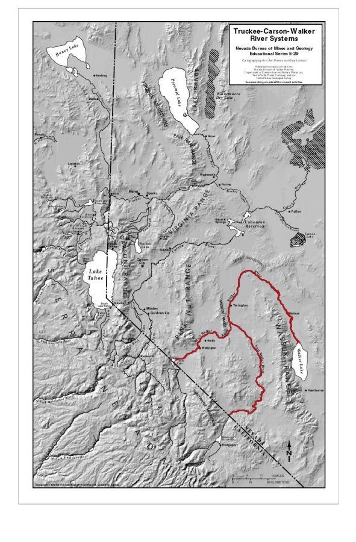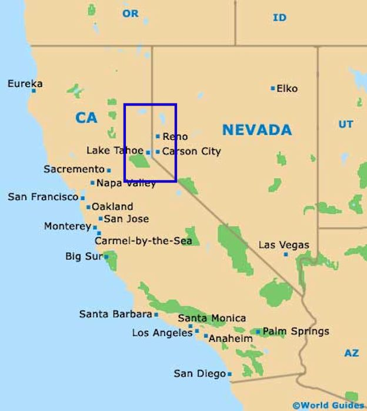
Relict Tree Stumps
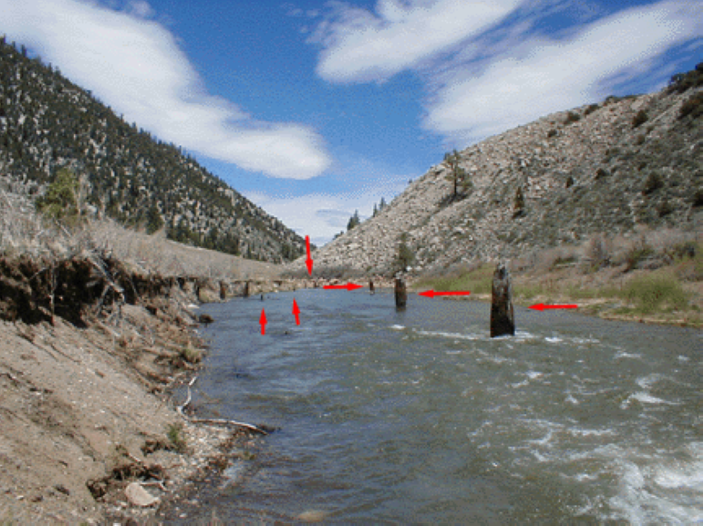
Relict Tree Stumps
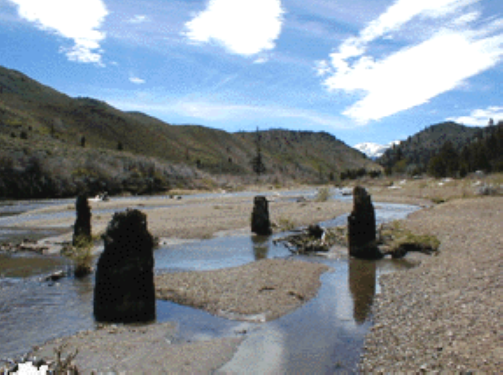
Lake Tanaya, Yosemite

Chaco Canyon
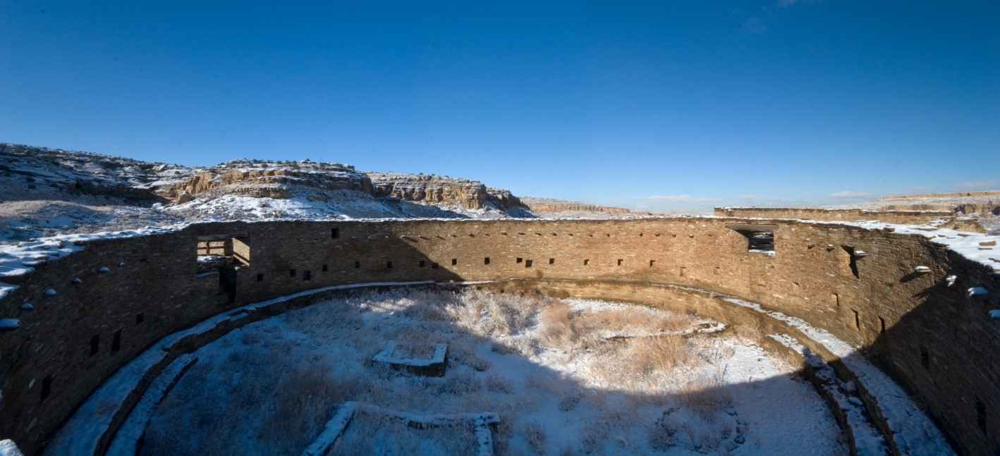
Reconstructing Megadroughts


Dust Bowl vs. Megadroughts
- 1930s “Dust Bowl”
- 6 years
- 25% reduction in rainfall in plains states
- Hundreds of thousands of refugees
- Medieval Megadroughts:
- Multiple droughts
- 60 years or longer (up to 240)
- 40% reduction of rainfall in plains states
- New research (2022):
- Current drought in the Southwest is the most severe since the medieval megadroughts.
Evidence for Human Impacts
on Climate Change
Detection and Attribution
- Detection:
- Is the climate changing?
- How much has it changed?
- Attribution:
- What is causing the climate to change?
- How much of the observed changes are due to human influences?
Detection
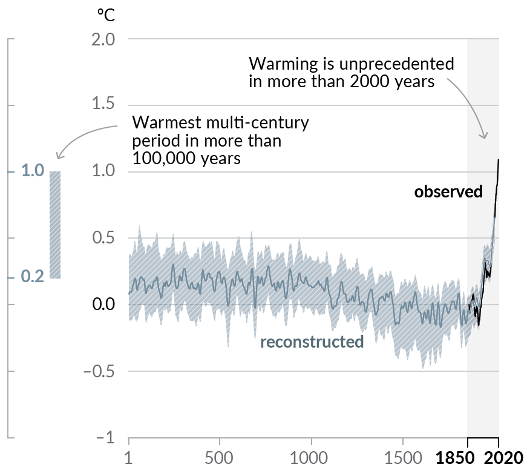
- The last century had warming completely unlike anything in the last 2,000 years.
“Fingerprint” Analysis
- There are many different things that can cause climate change:
- Greenhouse gases
- Aerosols (e.g., volcanic winter)
- Changing brightness of the sun
- …
- Each possible cause creates a distinctive pattern in space and
time:
- Some parts of the earth warm more than others
- Some seasons or times of day warm more than others
- Examples:
- Does the stratosphere warm or cool when the surface warms?
- Do the polar regions warm more or less than tropical regions?
- Do days warm faster than nights?
- Do winters warm faster than summers?
- Optimal Fingerprint Analysis:
- Identify distinctive patterns that allow us to rule out incorrect theories of what’s causing climate change
- Scientists have studied dozens of patterns and the vast majority are consistent with human causes and inconsistent with natural causes.
Smoking Gun

Smoking Gun in Detail

Can We Trust Climate Models?
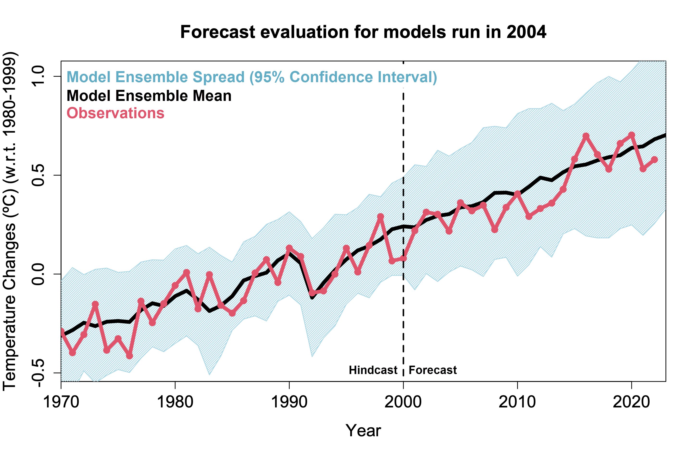
50 Years of Model Predictions
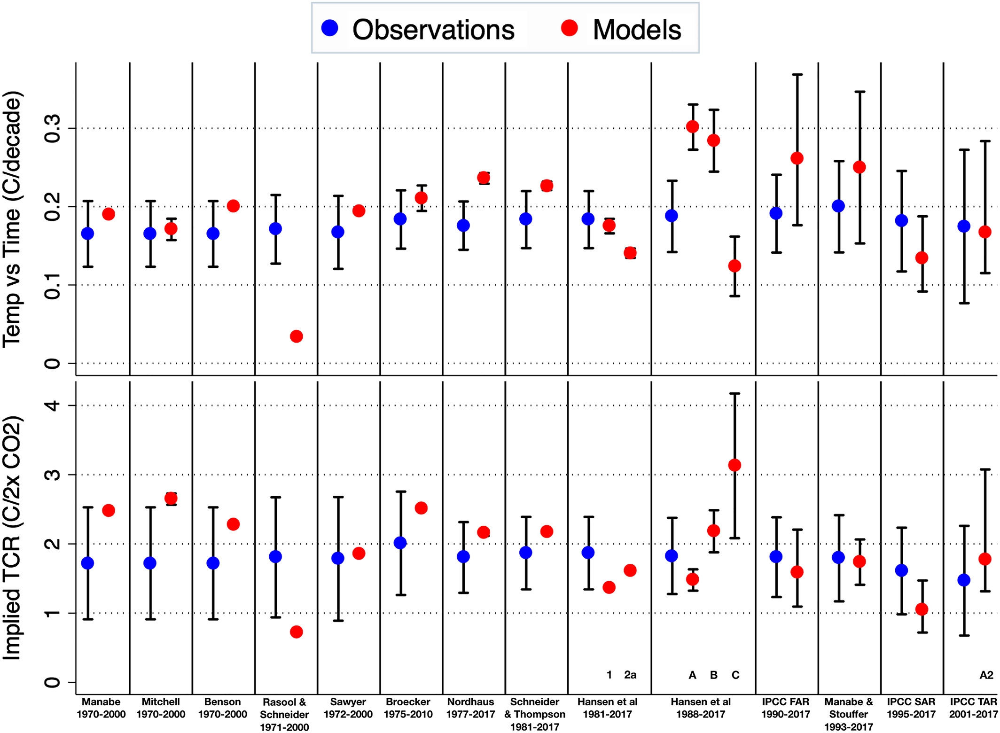